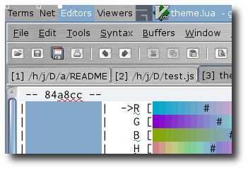

Estimated reading time: 2 minutes
Fancy awesome theming¶
{kind=link}
People, mostly named Neil Blake, who shouldn’t look over my shoulder ask:
Simple answer today; cheat.
As you can see in the screenshot on the right my wibox appears to be using the same fancy pixmap background as the GTK+ theme I’m using. What is actually happening is that I’ve pasted a copy of the background pixmap from the expose theme on top of my wallpaper using ImageMagick, which is easily achievable on a netbook without having to fire up the gimp.
convert /home/jay/.themes/expose/gtk-2.0/bc.xpm -scale 1024x20! bc.png
composite -gravity north bc.png backdrop.png backdrop_new.png
The initial convert command resizes bc.xpm from the expose
theme to 1024x20 pixels, 1024 being the screen width and 20 being the height of
my main wibox in awesome. We must suffix the -scale option’s
argument with ! to tell convert to ignore the image’s aspect
ratio when resizing, without this the command will not produce an image at the
size we expect.
The second command tells ImageMagick’s composite that we wish to
paste our newly generated image on top backdrop.png, we could specify
any location we want with the -gravity option but I have my wibox on
the top of the screen so north is correct for me.
With that done we have an image with our normal wallpaper and wibox sized chunk with our theme’s background. All we need to do now is tell awesome to make our wibox transparent and the final result is a wibox that appears to be using the theme’s background.
mywibox[s] = wibox position: "top", fg: beautiful.fg_normal, bg: "#00000000"
Colours are specified in the de facto standard format of
#[red][green][blue][alpha], the 00 value for alpha in the
above example means we want a fully transparent theme background. You could
include some colour values and varying levels of alpha transparency to tint the
background image, however that could also be achieved with ImageMagick when
building the background image if it is desired.
Click on the thumbnail image above to see the full desktop image and the effect in full.
Authenticate this page by pasting this signature into Keybase.
Have a suggestion or see a typo? Edit this page